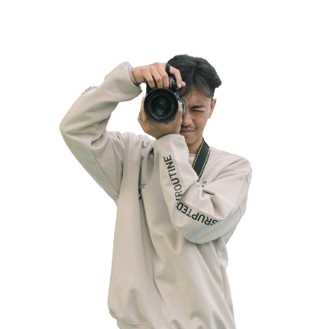

Hallo all I am
MUHAMMAD RUDI HARTONO
I am a student majoring in Business and Informatics, Banyuwangi State Polytechnic with expertise in Graphic Design, Web Developer, UI/UX Design and Photography.

During 6 semesters of study at Banyuwangi State Polytechnic, I have gained valuable experience and developed skills in various fields, especially in UI/UX Design, Software Development, and Software Requirements Analysis. I have been involved in various projects in college, which have allowed me to explore various aspects of user interface design, software development, and requirements analysis processes.
In the field of UI/UX, I have worked on numerous projects ranging from campus projects to design competitions and informatics business competitions. In each of these projects, I was responsible for understanding user needs, conducting market research, and creating wireframes and application prototypes. I also actively engaged in user testing to gather feedback and iterated on designs to enhance the overall user experience.
I have experience in the field of Graphic Design for approximately 3 years. I have been involved in various graphic design projects, from creating sales promotional materials, mockups, holiday posters, football match posters, to branding designs for products and services. For example, I was part of the team that designed the visual identity of the Football Club “Seduluran FC”. I contribute to designing material for social media such as posters for football matches and others.
I have been involved in some web development during my studies at Banyuwangi State Polytechnic. My projects include creating a stock website for the Ratu Makmur Plastik Indo Factory and an information platform for borrowing room keys and goods in the Department of Business and Informatics. I am responsible for Software requirements analysis, design, development, database integration, and Software Testing.
Analyze needs for stock management, design UI/UX for optimal user experience, and be responsible for database design and management to ensure optimal data integrity.
Building user-friendly UI/UX Design, Creating Front-End and Back-End to ensure the application functions according to requirements., Carrying out Software Testing to ensure the quality and reliability of the application, Leading the project, managing group members, and ensuring the project runs according to timetable.
Designing business ideas using Information Technology solutions, Designing Application designs, and Pitching.
I have skills in software development, including analyzing user needs and designing appropriate solutions. In various projects, my ability to create user-friendly UI/UX designs has proven effective. Apart from that, I can also lead a team to run projects smoothly and efficiently.
If you are interested in collaborating or have further questions, please feel free to contact me.